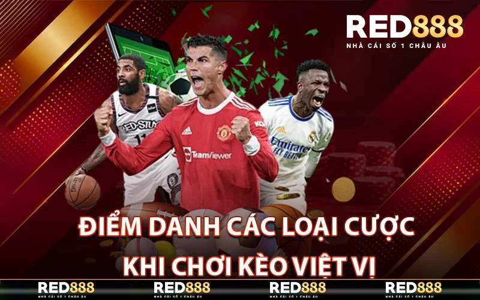
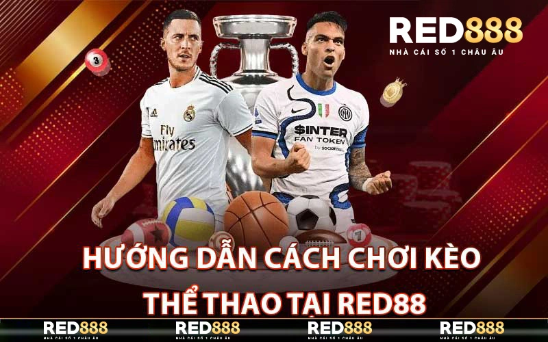

Kèo Việt Vị – Cách Chơi Kèo Banh Dành Cho Các Cược Thủ
ĐÃ ĐĂNG TRÊN 15/05/2024 BỞI RED888.LIFE
Kèo việt vị là một loại cược phổ biến và hấp dẫn, thu hút sự quan tâm của nhiều người chơi với cơ hội thắng lớn. Nhà cái Red888 chia sẻ những bí quyết và chiến thuật hữu ích giúp người chơi dễ dàng giành chiến thắng trong mỗi trận đấu thể thao qua bài viết dưới đây.
Giới Thiệu Về Kèo Việt Vị
Giới thiệu về Kèo Việt Vị
Kèo việt vị là một trong những loại kèo được đánh giá cao và được nhiều người chơi lựa chọn khi đặt cược. Đặc điểm của kèo việt vị là tỷ lệ cược được chấp theo từng trận đấu, từng đội bóng và từng kèo khác nhau. Như vậy, khi chơi kèo việt vị, bạn phải tính toán khéo léo để có thể đặt cược và đem lại lợi nhuận.
Kèo việt vị cũng được coi là một loại kèo khá chuyên nghiệp và yêu cầu người chơi có kiến thức về cách tính toán và phân tích tỷ lệ cược. Tuy nhiên, bạn cũng không cần quá lo lắng vì những người mới bắt đầu cũng có thể chơi kèo việt vị một cách dễ dàng nếu nắm rõ các quy tắc và kinh nghiệm chơi kèo này.
Điểm Danh Các Loại Cược Khi Chơi Kèo Việt Vị
Điểm danh các loại cược khi chơi kèo việt vị
Trong kèo việt vị, bạn sẽ gặp phải ba loại cược cơ bản, đó là cược chấp, kèo tài xỉu và kèo chẵn lẻ. Vậy thì, cụ thể các loại cược này là gì và cách tính toán ra sao? Chúng ta cùng điểm qua nhé.
Cược chấp
Cược chấp là một trong những loại cược quen thuộc và được áp dụng trong hầu hết các trận đấu bóng đá. Trong kèo việt vị, cược chấp là một trong những loại cược được ưa chuộng nhất và cũng là cách đơn giản nhất để bạn có thể chơi kèo.
Khi chơi cược chấp, bạn sẽ thấy một con số được gạch ngang và mỗi đội bóng sẽ có tỷ lệ chấp khác nhau. Ví dụ, trong trận đấu giữa Manchester United và Arsenal, nếu Manchester United được chấp -0.5, có nghĩa là họ phải thắng ít nhất 1 bàn để bạn đặt cược thắng. Trong khi đó, nếu Arsenal được chấp +0.5, nghĩa là họ có thể hoà hoặc thua với chỉ một bàn và bạn vẫn có thể thắng cược.
Kèo tài xỉu
Kèo tài xỉu là loại cược dựa trên tổng số bàn thắng được ghi trong một trận đấu. Bạn có thể đặt cược vào tổng số bàn thắng (tài) hoặc tổng số bàn thua (xỉu).
Ví dụ, trong trận đấu giữa Chelsea và Liverpool, nếu bạn đặt cược vào tài 2.5, có nghĩa là tổng số bàn thắng phải lớn hơn hoặc bằng 3 để bạn thắng cược. Ngược lại, nếu bạn đặt cược vào xỉu 2.5, tổng số bàn thắng phải nhỏ hơn hoặc bằng 2 để bạn thắng cược.
Kèo chẵn lẻ
Kèo chẵn lẻ là loại cược dựa trên tổng số bàn thắng có tính chẵn hay lẻ trong một trận đấu. Bạn có thể đặt cược vào tổng số bàn thắng là số chẵn hoặc số lẻ.
Ví dụ, nếu bạn đặt cược vào số chẵn và tổng số bàn thắng là 2, 4 hoặc 6 thì bạn sẽ thắng cược. Trong trường hợp tổng số bàn thắng là 1, 3 hoặc 5 thì bạn sẽ thua cược.
Hướng Dẫn Cách Chơi Kèo Thể Thao Tại Red888
Hướng dẫn cách chơi kèo thể thao tại Red888
Chơi kèo thể thao tại Red888 là một trải nghiệm hấp dẫn dành cho những ai yêu thích cá cược thể thao. Dưới đây là hướng dẫn chi tiết để bạn có thể tham gia một cách dễ dàng và hiệu quả:
Bước 1: Đăng ký và đăng nhập tài khoản
- Đăng ký tài khoản: Truy cập trang chủ Red888 và nhấp vào nút “Đăng ký”. Điền đầy đủ thông tin cá nhân và xác nhận để hoàn tất quá trình đăng ký.
- Đăng nhập: Sau khi có tài khoản, bạn đăng nhập bằng cách nhập tên đăng nhập và mật khẩu.
Bước 2: Nạp tiền vào tài khoản
- Chọn phương thức nạp tiền: Red888 hỗ trợ nhiều phương thức nạp tiền như chuyển khoản ngân hàng, ví điện tử, thẻ cào điện thoại, v.v.
- Thực hiện nạp tiền: Làm theo hướng dẫn trên trang để nạp tiền vào tài khoản của bạn.
Bước 3: Chọn môn thể thao và sự kiện
- Chọn môn thể thao: Truy cập mục “Thể thao” trên trang chủ Red888. Bạn sẽ thấy danh sách các môn thể thao khác nhau như bóng đá, bóng rổ, tennis, v.v.
- Chọn sự kiện: Chọn sự kiện hoặc trận đấu mà bạn muốn đặt cược. Red888 cung cấp nhiều giải đấu và sự kiện từ các giải đấu lớn nhỏ trên toàn thế giới.
Bước 4: Chọn kèo và đặt cược
- Xem tỷ lệ kèo: Mỗi sự kiện sẽ có nhiều loại kèo khác nhau như kèo châu Á, kèo châu Âu, kèo Tài/Xỉu, v.v. Chọn loại kèo mà bạn muốn đặt cược.
- Đặt cược: Nhập số tiền bạn muốn đặt cược và xác nhận. Kiểm tra lại các thông tin cược trước khi xác nhận để tránh nhầm lẫn.
Bước 5: Theo dõi và rút tiền
- Theo dõi kết quả: Sau khi đặt cược, bạn có thể theo dõi kết quả trận đấu trực tiếp trên Red888 hoặc qua các kênh thể thao khác.
- Rút tiền: Nếu thắng cược, bạn có thể rút tiền về tài khoản ngân hàng hoặc ví điện tử của mình. Chọn mục “Rút tiền” và làm theo hướng dẫn để thực hiện giao dịch.
Kinh Nghiệm Để Chơi Kèo Việt Vị Bách Thắng
Như đã đề cập ở trên, kèo việt vị là một trong những loại kèo yêu cầu người chơi có kiến thức và kinh nghiệm để có thể đưa ra quyết định đúng đắn và đem lại lợi nhuận. Vậy thì, để có thể chơi kèo việt vị bách thắng, bạn cần phải có những kinh nghiệm gì?
Nắm rõ luật chơi
Điều đầu tiên và quan trọng nhất là bạn cần phải nắm rõ luật chơi của kèo việt vị. Bạn cần biết cách tính toán tỷ lệ cược, tình huống nào được coi là thắng, cách đặt cược và các loại kèo khác nhau.
Phân tích thông tin
Kỹ năng phân tích thông tin là yếu tố quan trọng khi chơi kèo việt vị. Bạn cần phải xem lại thành tích đối đầu, tình hình hiện tại của từng đội bóng, cầu thủ chấn thương hay bị treo giò để đưa ra quyết định chính xác.
Tìm hiểu các mẹo chơi
Để có thể chơi kèo việt vị một cách hiệu quả, bạn cần phải tìm hiểu các mẹo chơi từ các chuyên gia hoặc những người đã có kinh nghiệm trong lĩnh vực này. Chúng sẽ giúp bạn tăng cường kiến thức và cải thiện kỹ năng phân tích để đưa ra quyết định chính xác.
Đừng quá nóng vội
Một lỗi thường mắc phải của những người mới bắt đầu chơi kèo việt vị là đặt cược quá nhiều khi tỉ lệ cược hấp dẫn. Tuy nhiên, điều này có thể khiến bạn gặp rủi ro và mất tiền một cách dễ dàng. Vì vậy, hãy kiên nhẫn và đặt cược chỉ khi bạn đã có kết quả phân tích chính xác.
Kết Luận
Kèo việt vị là một trong những loại kèo được đánh giá cao và được nhiều người chơi lựa chọn khi đặt cược. Bằng cách nắm rõ các quy tắc và kinh nghiệm, bạn có thể chơi kèo việt vị hiệu quả và đem lại lợi nhuận cho mình. Vì vậy, hãy cùng tham gia vào thế giới của kèo việt vị và khám phá sự thú vị mà nó mang lại.
BÀI VIẾT MỚI